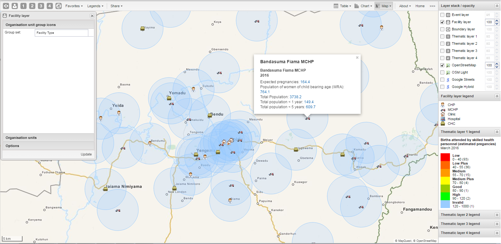

The facility layer displays icons that represent types of facilities. Polygons do not show up on the map, so make sure that you select an organisation unit level that has facilities.
A polygon is an enclosed area on a map representing a country, a district or a park. In GIS, a polygon is a shape defined by one or more rings, where a ring is a path that starts and ends at the same point.
Facility layer
|  |
In the top menu, click the facility layer icon.
Click Edit layer.
In the Organisation unit group icons section, select a Group set.
In the Organisation units section, select one or several organisation units.
In the Options section, select if you want to show labels and if so, how they look.
In the Options section, select if you want to display a circle with a certain radius around each facility.
Click Update.
To locate an organisation unit in the map:
In the top menu, click the facility layer icon.
Click Search.
The Organisation unit search dialog box opens.
In the text field, type the name of the organisation unit you are looking for or click a name in the list.
The organisation unit is highlighted in the map.